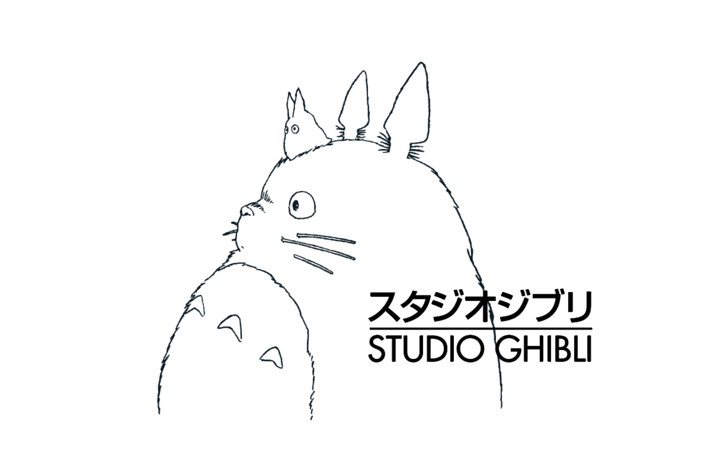
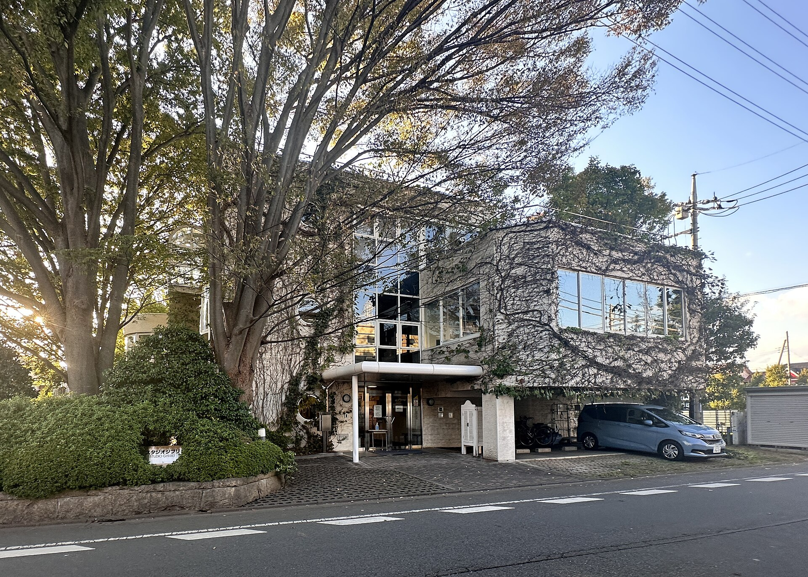

Studio Ghibli Inc. (Japanese: 株式会社スタジオジブリ, Hepburn: Kabushiki-gaisha Sutajio Jiburi)[3] is a Japanese animation studio based in Koganei, Tokyo.[4] It was founded on June 15, 1985, by directors Hayao Miyazaki and Isao Takahata and producer Toshio Suzuki, after acquiring Topcraft's assets. It has a strong presence in the animation industry and has expanded its portfolio to include various media such as short subjects, television commercials and two television films. The studio's work is highly acclaimed by both critics and audiences and has been recognized with numerous awards. Their mascot and most recognizable character is Totoro from the 1988 film My Neighbor Totoro, a giant spirit inspired by raccoon dogs (tanuki) and cats (neko).[5] Among the studio's highest-grossing films are Princess Mononoke (1997), Spirited Away (2001), Howl's Moving Castle (2004), Ponyo (2008), and The Boy and the Heron (2023).[6]
Studio Ghibli's major awards across organizations include two Academy Awards for Best Animated Feature,[7][8] one Golden Globe Award for Best Animated Feature Film,[9] one BAFTA Award for Best Animated Film,[10] one Golden Bear, three Animage Grand Prix awards and six Japan Academy Prizes. Four of the studio's films are among the ten highest-grossing Japanese feature films; Spirited Away is fourth, grossing ¥31.68 billion in Japan and over US$380 million worldwide. In 2026 the Studio Ghibli was awarded the Princess of Asturias Award in the category of "Communication and Humanities".[11]

Ghibli Logo

Ghibli Headquarters
Name
The name "Ghibli" was chosen by Miyazaki from the Italian noun ghibli (also used in English), the nickname of Italy's Saharan scouting plane Caproni Ca.309, in turn derived from the Italianization of the Libyan Arabic name for a hot desert wind (قبلي qibliyy). The name was chosen by Miyazaki out of his passion for aircraft and for the idea that the studio would "blow a new wind through the anime industry".[12][13] Although the Italian word would be more accurately transliterated as "Giburi" (ギブリ), with a hard g sound, the studio's name is written in Japanese as Jiburi (ジブリ; [dʑiꜜbɯɾi] ⓘ).[12]
History
Tokuma Shoten era
On June 15, 1985, Hayao Miyazaki and Isao Takahata founded Studio Ghibli, with support from Toshio Suzuki and his publishing company Tokuma Shoten. The three already had long careers in Japanese film and television animation and had worked together on The Great Adventure of Horus, Prince of the Sun in 1968 and the Panda! Go, Panda! films in 1972 and 1973. Suzuki had been an editor at Tokuma Shoten's Animage manga magazine.[14] The studio was founded after the success of the 1984 film Nausicaä of the Valley of the Wind.[15][16][17] Miyazaki chose the name himself,[18] referencing both the Arabic term for a warm wind from the Sahara, as well as the Caproni Ca.309 Ghibli, an aircraft used by the Italian military during the Second World War.[19] The intent behind the creation of the studio was to "blow a whirlwind" into a stagnating Japanese animation industry by creating original, high-quality feature films.[20] In a speech at the 1995 Annecy International Animation Film Festival, Suzuki said "The idea was to dedicate full energy into each piece of work with sufficient budget and time, never compromising on the quality or content."[21]
The studio has mainly produced films by Miyazaki, with the second most prolific director being Takahata (most notably with Grave of the Fireflies). Other directors who have worked with Studio Ghibli include Yoshifumi Kondō, Hiroyuki Morita, Gorō Miyazaki, and Hiromasa Yonebayashi. Composer Joe Hisaishi has provided the soundtracks for most of Miyazaki's Studio Ghibli films. In their book Anime Classics Zettai!, Brian Camp and Julie Davis made note of Michiyo Yasuda as "a mainstay of Studio Ghibli's extraordinary design and production team".[22] At one time, the studio was based in Kichijōji, Musashino, Tokyo.[23]
In August 1996, The Walt Disney Company and Tokuma Shoten formed a partnership wherein Walt Disney Studios would be the sole international distributor for Tokuma Shoten's Studio Ghibli animated films.[24] Under this agreement, Disney also agreed to finance 10% of the studio's production costs.[25] Since then, all three of the aforementioned films by Miyazaki at Studio Ghibli that were previously dubbed by Streamline Pictures have been re-dubbed by Disney.[26] On June 1, 1997, Tokuma Shoten Publishing consolidated its media operations by merging Studio Ghibli, Tokuma Shoten Intermedia software and Tokuma International under one location.[27]
Over the years, there has been a close relationship between Studio Ghibli and the magazine Animage, which regularly runs exclusive articles on the studio and its members in a section titled "Ghibli Notes". Artwork from Ghibli's films and other works are frequently featured on the cover of the magazine. Saeko Himuro's novel Umi ga Kikoeru was serialised in the magazine and subsequently adapted into Ocean Waves, Studio Ghibli's first animated feature-length film created for television. It was directed by Tomomi Mochizuki.[28]
In October 2001, the Ghibli Museum opened in Mitaka, Tokyo.[29] It contains exhibits based on Studio Ghibli films and shows animations, including a number of short Studio Ghibli films not available elsewhere. The studio is also known for its strict "no-edits" policy in licensing their films abroad due to Nausicaä of the Valley of the Wind being heavily edited for the film's release in the United States as Warriors of the Wind.[30][31]
Independent era
Between 1999 and 2005, Studio Ghibli was a subsidiary brand of Tokuma Shoten; however, that partnership ended in April 2005, when Studio Ghibli was spun off from Tokuma Shoten and was re-established as an independent company with relocated headquarters.[32] In 2004, Studio Ghibli was presented with a Special Golden Osella for Howl's Moving Castle, marking the only occasion that the award was given to a production studio.[33] On February 1, 2008, Toshio Suzuki stepped down from the position of Studio Ghibli president, which he had held since 2005, and Koji Hoshino (former president of Walt Disney Japan) took over. Suzuki said he wanted to improve films with his own hands as a producer, rather than demanding this from his employees. Suzuki decided to hand over the presidency to Hoshino because Hoshino has helped Studio Ghibli to sell its videos since 1996 and has also aided the release of the Princess Mononoke film in the United States.[34] Suzuki still serves on the company's board of directors.[35] Takahata developed a project for release after Gorō Miyazaki's (director of Tales from Earthsea and Hayao's son) The Tale of the Princess Kaguya – an adaptation of The Tale of the Bamboo Cutter. Miyazaki announced his retirement with The Wind Rises which is about the Mitsubishi A6M Zero and its creator.[36] On September 1, 2013, Miyazaki held a press conference in Venice to confirm his retirement, saying: "I know I've said I would retire many times in the past. Many of you must think, 'Once again.' But this time I am quite serious."[37]
In 2013, a documentary directed by Mami Sunada called The Kingdom of Dreams and Madness (Japanese: 夢と狂気の王国, Hepburn: Yume to kyōki no ōkoku) was created delving into the lives of those working at Studio Ghibli and the productions of the animated films The Wind Rises and The Tale of the Princess Kaguya, including storyboard sketching, inking, painting, and voice actor selection for the films.[38] On January 31, 2014, it was announced that Gorō Miyazaki will direct his first anime television series, Sanzoku no Musume Rōnya, an adaptation of Astrid Lindgren's Ronia the Robber's Daughter for NHK. The series is computer-animated, produced by Polygon Pictures, and co-produced by Studio Ghibli.[39][40] In March 2014, Toshio Suzuki retired as producer and assumed the new position of general manager. Yoshiaki Nishimura replaced Suzuki in the producer role.[41] On August 3, 2014, Toshio Suzuki announced that Studio Ghibli would take a "brief pause" to re-evaluate and restructure in the wake of Miyazaki's retirement. He stated some concerns about where the company would go in the future.[42][43][44][45] This led to speculation that Studio Ghibli will never produce another feature film again. On November 7, 2014, Miyazaki stated, "That was not my intention, though. All I did was announce that I would be retiring and not making any more features."[46] Lead producer Yoshiaki Nishimura among several other staffers from Ghibli, such as director Hiromasa Yonebayashi, left to found Studio Ponoc in April 2015, working on the film Mary and the Witch's Flower.[47]
The 2016 animated fantasy film The Red Turtle, directed and co-written by Dutch-British animator Michaël Dudok de Wit in his feature film debut, was a co-production between Studio Ghibli and Wild Bunch.[48] In February 2017, Toshio Suzuki announced that Hayao Miyazaki had come out of retirement to direct a new feature film with Studio Ghibli.[49] On November 28, 2017, Koji Hoshino stepped down as president; he was replaced by Kiyofumi Nakajima (former Ghibli Museum director). Hoshino was then appointed as Chairman of Studio Ghibli.[50][51] In May 2020, Toshio Suzuki confirmed that a new film from Gorō Miyazaki is in development at Studio Ghibli. On June 3, 2020, Studio Ghibli announced that the film would be an adaptation of the novel Earwig and the Witch by Diana Wynne Jones. The film was announced as the first full 3D CG animated Ghibli film and slated for a television premiere on NHK in late 2020.[52] The company had a net income of ¥1.253 billion, and a total asset worth ¥24.521 billion by August 2021.[53] On November 1, 2022, the Studio Ghibli themed amusement park Ghibli Park opened.[54]
On April 4, 2023, Koji Hoshino announced that he had stepped down as chairman, and would serve as a representative director before planning to exit Studio Ghibli completely during the company's annual general shareholder's meeting in June, one month prior to the release of director Hayao Miyazaki's latest movie The Boy and the Heron on July 14.[55] He also announced that Toshio Suzuki would be replacing Kiyofumi Nakajima as president of Studio Ghibli, assuming the role for the first time since 2008, while Nakajima would continue to serve as a director.[56] This change of management came about amidst reports that Suzuki had allegedly been mismanaging company funds by directing them towards his girlfriend's failed business ventures. This reportedly created tension between Suzuki and Hoshino, with the latter reportedly citing it as a long-term internal problem at the company since the couple met in 2013 and was the reason for his planned departure from the company, although a spokesperson for Studio Ghibli in a statement to Variety denied that Hoshino's departure had anything to do with these reports.[57][58][55] The source of the allegations came from the tabloid paper, Shūkan Josei and was not corroborated by the mainstream media in Japan.[59]
Nippon Television era
In October 2023, the studio became a subsidiary of Nippon Television Holdings, Inc. Studio Ghibli's leadership transitioned to Hiroyuki Fukuda, a senior executive at NTV. Toshio Suzuki became chairman and Hayao Miyazaki became Honorary Chairman. Nippon TV acquired a 42.3% stake in Studio Ghibli. The decision was driven by the advanced ages of Miyazaki and Suzuki, aged 82 and 75, respectively. The studio had considered Miyazaki's son, Goro Miyazaki, as a successor but opted for external leadership due to concerns and Goro's reluctance. NTV started to handle management, allowing Studio Ghibli to focus on creative endeavors.[60][61] The takeover took effect on October 6.[62]
In 2024, the studio received an honorary Palme d'Or at the 2024 Cannes Film Festival, the first film production company to receive the award.[63][64] It was announced in May 2026 that Fukuda was to step down as president in June, to be replaced by Kenichi Yoda.[65] Ghibli Park announced on July 8th, 2026, that Goro Miyazaki and Akihiko Yamashita co-directed A Night in the Valley of Witches. It will premiere at Cinema Orion in Ghibli's Grand Warehouse at Ghibli Park. The short film was produced by Studio Ghibli and exclusively distributed for their park. [66] [67]
Distribution rights
Theatrical and home media rights
Japan
In Japan, most of the company's films are distributed theatrically by Toho, except for Castle in the Sky, Kiki's Delivery Service (which were distributed by Toei Company along with Nausicaä of the Valley of the Wind) and My Neighbors the Yamadas, which was distributed by Shochiku. For home media, a majority of Studio Ghibli releases are distributed by Walt Disney Studios Japan.[68][69] Pony Canyon occasionally releases Ghibli documentaries on home media, and distributes rental versions of Ghibli's movies under a deal with Disney.[70][71][72] Pony Canyon also fully distributed the standalone version of Earwig and the Witch on home media.[73][74] Before the Disney deal, Tokuma Shoten released Ghibli movies themselves through their "Animage Video" imprint, as well as all LaserDisc releases of the movies, as the Disney deal did not include that format.
International
After purchasing the global distribution rights from World Film Corporation,[75] Manson International and Showmen, Inc. produced a 95-minute English dub of Nausicaä of the Valley of the Wind, titled Warriors of the Wind,[76] which was released theatrically in the United States by New World Pictures on June 14, 1985, followed by a VHS release in December 1985.[77][78] The voice actors and actresses were not credited, and the film was heavily edited to give it a faster pace.[79] The film received a PG rating just like Disney's later English dub.[80] By removing several of the longer dialogue scenes, some of the environmentalist themes were simplified as was the main subplot of the Ohmu, altered to remove Nausicaä's childhood connection to them.[81] Most of the characters' names were changed, including the titular character who became Princess Zandra. The North American poster and VHS cover featured a cadre of male characters who are not in the film, riding the resurrected Giant Warrior—including a still-living Warrior shown briefly in a flashback. Overall, approximately 22 minutes was cut for North American release.[80] Warriors of the Wind also prompted Miyazaki to allow translator Toren Smith of Studio Proteus to create an official, faithful translation of the Nausicaä manga for Viz Media.[82]
In the late 1980s, an English dub of Castle in the Sky was produced for international Japan Airlines flights at the request of Tokuma Shoten. The Castle dub was briefly screened in the United States by Streamline Pictures. Carl Macek, the head of Streamline, was disappointed with this dub, deeming it "adequate, but clumsy".[83] Following this, Tokuma allowed Streamline to dub their future acquisitions My Neighbor Totoro and Kiki's Delivery Service. In April 1993, Troma Films, under their 50th St. Films banner, distributed the Totoro dub as a theatrical release, and the dub was later released on both VHS and DVD by 20th Century Fox Home Entertainment. In the early 1990s, an English dub of Porco Rosso was produced by Ward Sexton in Japan, again for international Japan Airlines flights.[84][85] The original dubs can be seen on the 1996 Ghibli ga Ippai Laserdisc set, the initial copies for the Japanese DVD releases of Totoro, Laputa and Porco, and Fox's VHS and DVD releases of Totoro.
In 1996, after careful negotiations with major film studios, which included Warner Bros. and 20th Century Fox,[86] Walt Disney Studios acquired worldwide distribution rights to the Studio Ghibli library, with Disney redubbing all previously dubbed films.[24][87] In addition, Walt Disney Studios Japan agreed to contribute 10% of the funding for all future releases, starting with My Neighbors the Yamadas, in exchange for right of first refusal regarding international distribution.[25] Disney continues with this practice to this day, even extending it to the works of Studio Ponoc and to co-productions like The Red Turtle in Japan. It reportedly took four years for Disney and Studio Ghibli to reach a distribution deal. Originally, the Ghibli films were meant to headline a line of videos called Animation Celebration, highlighting critically acclaimed animated films from around the world. These plans never materialized in full, but the Animation Celebration logo can be seen on Disney's original VHS release of Kiki's Delivery Service. During Disney's tenure, the studio produced the English dubs and released 15 of Ghibli's films, plus Nausicaä of the Valley of the Wind, through the Walt Disney Pictures, Buena Vista Home Video, Miramax (now-owned by Paramount) and Touchstone Pictures banners.[88] The September 1998 VHS release of Kiki's Delivery Service in the United States would prove to be a major success for Studio Ghilbli.[89][90][91]
Disney and Ghibli have also selectively chosen not to promote and record an English-dubbed version for films and works deemed less internationally marketable, including some of Takahata's more developmental and obscure pieces.[92] Although the Studio has a "No cuts" policy in terms of international versions and dubs, this does not apply to promotional materials, such as posters, for which the filmmakers collaborate with Disney to produce cultural appropriate international versions. The Studio has not shied away from rebranding on the international stage in order to convey tweaked promotional imagery for different cultural norms. One example of these tweaks to international promotional materials can be seen between the Japanese and English versions of the movie poster for Spirited Away (2001). For American and other English-speaking audiences, the name of the film was changed from the Japanese version, which directly translates roughly to, "The Disappearance of Chihiro and Sen", to Spirited Away to suggest more mystical, otherworldly themes, since the direct Japanese translation could be taken to mean that Chihiro/Sen disappeared due to some more dangerous reason. On the American movie poster, more pictures of spirits from the film were added to the background to further pique the viewer's interest with more supernatural themes, creating an association between the film's spirits and what most American people would think of as "ghosts". For the Japanese poster, there are fewer spirits as the Japanese Shinto religion normalizes the existence of spirits, so less emphasis is needed to convey the importance of non-human spirits. Also, Disney enlarged the "Studio Ghibli" and "Hayao Miyazaki" labels on the poster, helping to bring greater awareness to the studio through the success of Spirited Away.[93]
In 2011, GKIDS acquired the North American theatrical distribution rights of the aforementioned Ghibli films, with Walt Disney Studios Home Entertainment retaining the home video rights.[94] Afterwards, in 2013, GKIDS acquired the US and Canadian distribution rights to From Up on Poppy Hill. The film, which Disney passed on to GKIDS due to dealing with potential incest, marked the first time since 1996 that Disney handed a Studio Ghibli film off to another distributor. Afterwards, GKIDS would go on to distribute the films Disney found to be too mature or unmarketable for American audiences: Only Yesterday, Ocean Waves, The Tale of the Princess Kaguya and When Marnie Was There. In July 2017, Disney relinquished its home video rights (with the exception of The Wind Rises, which remained with Disney until 2020 due to a distribution clause) to GKIDS, which handles all theatrical and home media distribution of Ghibli films in North America along with Mary and the Witch's Flower.[87] Nevertheless, Disney still continues to handle select distribution in Japan (home media), Taiwan and China (both under Buena Vista International brand). In July 2026, following the dissolution of former rights holder Elysian Film Group Distribution, GKIDS also acquired rights to the Ghibli library in the United Kingdom and Ireland. The company, in collaboration with sister company Anime Limited, will re-release Kiki's Delivery Service in IMAX on August 21, 2026, with future re-releases including Arrietty and Whisper of the Heart.[95]
GKIDS' home media releases have been handled by multiple distributors. Cinedigm distributed the home media release of Poppy Hill, Universal Pictures Home Entertainment distributed the home media releases of Kaguya, Marnie, Mary, Yesterday and Waves, and Shout! Factory all subsequent releases thus far. The Ghibli films owned by GKIDS were made available for digital purchases on most major services in the United States and Canada on December 17, 2019, through Shout! Factory.[96] Outside Asia (including Japan) and North America since 2003, Goodfellas (a former subsidiary of Wild Bunch, formerly known as Wild Bunch International) has been Studio Ghibli's international sales holder.[97] Individual rights to Ghibli's films are held by various third parties, including GKIDS and Anime Limited[95] (United Kingdom and Ireland),[a] Wild Bunch (France),[b][102] and Encore Films/mm2 Entertainment (Southeast Asia).[103] The Secret World of Arrietty received a second dub exclusive to the United Kingdom, produced by StudioCanal UK, likely due to the film's origins being from Mary Norton's British novel The Borrowers.[citation needed]
Disney formerly held international sales rights until they were sold off to Goodfellas (then Wild Bunch) in 2003. Disney kept the French distribution rights to Ghibli's library until September 2020, when it had expired and transitioned off to Wild Bunch.[104] Since 2021, Warner Bros. Home Entertainment serves as the home media distributor of Studio Ghibli's catalog via its distribution deal with Wild Bunch through the Wild Side Vidéo label.[105][106][107]
Streaming rights
Prior to 2019, Studio Ghibli opted not to make its films available digitally, feeling that physical media and theatrical events like GKIDS' Studio Ghibli Fest would work more towards their goal of mindful care and curation for their films. Disney had previously lobbied for a streaming deal with Ghibli during their distribution tenure, but such attempts were never materialized.[88] The studio heads changed their minds after hearing a quote from American actor and director Woody Allen about how there should be multiple outlets for feature films.[108] On October 17, 2019, Warner Bros. Discovery's HBO Max announced it had acquired exclusive streaming rights to Studio Ghibli's catalogue in the United States as part of a deal with GKIDS; these films were available when the service launched in May 2020.[109] On January 20, 2020, it was announced that Netflix acquired the exclusive streaming rights to this catalogue in all regions where it operates except for the United States (in which Netflix does have streaming rights to The Castle of Cagliostro and Mary and the Witch's Flower), as part of a deal with Ghibli's international sales rights partner Wild Bunch. Seven of twenty-one films in the studio's catalogue were released on February 1, 2020, with the others following on March 1 and April 1.[110] Netflix then struck a separate deal with GKIDS for streaming rights in Canada which was announced on June 22, and came into effect on June 25 for most films.[111] As of 2024, no streaming rights deals have yet been announced for Studio Ghibli's home country of Japan, nor for markets such as China where neither Netflix nor HBO Max is available.
Grave of the Fireflies
Most of the above deals exclude Grave of the Fireflies; unlike most of the other films, which were published by Tokuma Shoten, Grave of the Fireflies was produced and is owned by Shinchosha, which also had published the short story it was based on, and as such, fell into different rights holdings.[96] It was released in Japan on VHS by Buena Vista Home Entertainment under the Ghibli ga Ippai Collection on August 7, 1998. On July 29, 2005, a DVD release was distributed through Warner Home Video. Walt Disney Studios Japan released the complete collector's edition DVD on August 6, 2008.[citation needed] Walt Disney Studios Japan released the film on Blu-ray twice on July 18, 2012: one as a single release, and one in a two-film set with My Neighbor Totoro.[112] StudioCanal released a Blu-ray in the United Kingdom on July 1, 2013.[113] Madman Entertainment released the film in Australia and New Zealand.[114]
It was released on VHS in North America by Central Park Media in a subtitled form on June 2, 1993.[115] They later released the film with an English dub on VHS on September 1, 1998 (the same day Disney released Kiki's Delivery Service in North America) and an all-Regions DVD (which also included the original Japanese with English subtitles) on October 7 the same year. It was later released on a two-disc DVD set (which once again included both the English dub and the original Japanese with English subtitles as well as the film's storyboards with the second disc containing more extensive Bonus Features) on October 8, 2002. It was released by Central Park Media one last time on December 7, 2004. Following the May 2009 bankruptcy and liquidation of Central Park Media,[116] ADV Films re-acquired the rights to the film from Central Park Media and re-released on DVD on July 7, 2009.[117] Following the September 1, 2009 shutdown and re-branding of ADV,[118] their successor, Sentai Filmworks, rescued the film and released a remastered DVD on March 6, 2012.[119][120] A Blu-ray edition was released on November 20, 2012, featuring an all-new English dub produced by Seraphim Digital, along with a digital release that same year.[121] Netflix acquired the distribution rights to the film in 2024 and began featuring it for digital streaming outside of Japan on September 16, 2024.[122] GKIDS re-acquired the rights to the film from Sentai Filmworks and re-released on Blu-ray and DVD on July 8, 2025, under a new deal with Studio Ghibli (which has the original Japanese version and the 1998 and 2012 English dubs).[123] In August 2025, Anime Limited acquired the British and Irish distribution rights to the films following the expiration of StudioCanal rights with Shinchosha and announced they would re-release the film theatrically and on Blu-ray in 2026.[124]
Selected Works
For a more comprehensive list, see List of Studio Ghibli works.
- Castle in the Sky (1986)
- Grave of the Fireflies (1988)
- My Neighbor Totoro (1988)
- Kiki's Delivery Service (1989)
- Only Yesterday (1991)
- Porco Rosso (1992)
- Ocean Waves (1993)
- Pom Poko (1994)
- Whisper of the Heart (1995)
- Princess Mononoke (1997)
- My Neighbors the Yamadas (1999)
- Spirited Away (2001)
- The Cat Returns (2002)
- Howl's Moving Castle (2004)
- Tales from Earthsea (2006)
- Ponyo (2008)
- Arrietty (2010)
- From Up on Poppy Hill (2011)
- The Wind Rises (2013)
- The Tale of the Princess Kaguya (2013)
- When Marnie Was There (2014)
- The Red Turtle (2016)
- Earwig and the Witch (2020)
- The Boy and the Heron (2023)
Style and Themes
Further information: Hayao Miyazaki § Themes
Studio Ghibli films are mostly hand-drawn using rich watercolor and acrylic paints. The films use traditional methods of making animation where every frame is drawn and colored by hand. Computer animation techniques are used sparingly.[125] All the Studio Ghibli films use bright colors,[126][127] and have a "whimsical and joyful aesthetic".[128] Studio Ghibli's art style tends to be more of a cozy European style that put a lot of undertones on the background and nature in the scene.[129] Notable exceptions are the final two films of Isao Takahata, My Neighbors the Yamadas and The Tale of the Princess Kaguya, which "stand out visually from the rest of the Ghibli canon" through intentional visual imperfections such as stray pencil lines.[130] Both films also integrate premodern Japanese visual art forms through soft watercolor palettes and storybook-like aesthetic reminiscent of Japanese folk art.[130] For Kaguya, this approach aimed to reflect the emotions and inner struggles of the characters and highlight the hand-drawn animation.[131] The films often focus on the lives of youth, especially school children. Common themes include the risks posed by progress to tradition,[132] environmentalism and the natural world,[132][128] independent female protagonists,[126] the cost of war, and youth.
Music
Much of Studio Ghibli's music is composed by Joe Hisaishi, who has worked with Miyazaki on creating the music for his films for over 30 years. He uses storyboard images, provided by Miyazaki, to create an image album,[133] which is then used to build out the final soundtrack for the movie. The music has elements from Baroque counterpoint, jazz, and modal music[134] to create the unique sound that many associate with both Hisaishi and Studio Ghibli. Early on, the music in the films was known for its eclectic, synth sound, before later moving to more motivic and melody-driven music.[135] Especially present in earlier years, the music does not directly relate to the emotions and rhythms happening on screen.[135] Another defining feature is Hisaishi's unique use of leitmotif, rather than a singular song being associated with one character, the motif is the theme of the film.[136] Hisaishi began using leitmotif in Ghibli films first in Howl's Moving Castle.[135]
See Also
- Ghibli Museum in Mitaka, Tokyo
- Ghibli Park in Nagakute, Aichi
- Studio Kajino, a subsidiary of Studio Ghibli
- Yasuo Ōtsuka
- Studio Ponoc, founded by former members of Studio Ghibli
- List of Japanese animation studios
Notes
- Elysian Film Group Distribution and Anonymous Content owned rights to some titles in the Ghibli library until the former's dissolution in June 2026: Earwig and the Witch (owned solely by Elysian), My Neighbor Totoro (under the title My Neighbour Totoro), Spirited Away, Howl's Moving Castle, Princess Mononoke, and The Boy and the Heron (under a three-way partnership with Bleecker Street). Grave of the Fireflies is currently distributed by Anime Limited. StudioCanal UK formerly distributed Ghibli's films in the United Kingdom, including Grave, until the contract ended following a lawsuit between them and Goodfellas in December 2022. The StudioCanal deal also included DVD and Blu-ray distribution of The Great Adventure of Horus, Prince of the Sun and The Castle of Cagliostro, the first full-length feature films directed by Isao Takahata and Hayao Miyazaki, respectively.
- Home video rights are held by Wild Bunch subsidiary Wild Side, with Warner Bros. Home Entertainment as distributor.
- Co-production with Wild Bunch.
References
- Studio Ghibli (March 31, 2025). 第23期決算公告 [Announcement of the 23nd fiscal period]. PR Times (in Japanese). Retrieved July 19, 2025.
- Takai, Shinichi. スタジオジブリの概要 – スタジオジブリ | STUDIO GHIBLI. www.ghibli.jp (in Japanese). Archived from the original on October 26, 2016. Retrieved August 20, 2023.
- "スタジオジブリの概要 – スタジオジブリ | Studio Ghibli". Archived from the original on October 26, 2016. Retrieved March 10, 2022.
- "Studio Ghibli Collection – Madman Entertainment". Studio Ghibli Collection – Madman Entertainment. Retrieved 2020-12-14.
- Esmeralda, Jade Nicolette (April 17, 2017). "Studio Ghibli: 15 Things You Never Knew About My Neighbor Totoro". Screen Rant. Archived from the original on April 18, 2017. Retrieved July 8, 2022.
- Gama, Daniela (January 11, 2024). "The 15 Highest-Grossing Studio Ghibli Movies of All Time, Ranked". Collider. Archived from the original on February 29, 2024. Retrieved March 21, 2024.
- John (November 22, 2011). "Everything You Need to Know About Studio Ghibli". Tofugu. Archived from the original on May 8, 2018. Retrieved May 3, 2018.
- Giardina, Carolyn (March 10, 2024). "'The Boy and the Heron' Delivers Hayao Miyazaki His Second Oscar". Variety. Archived from the original on March 11, 2024. Retrieved March 11, 2024.
- "Hayao Miyazaki wins Golden Globe for The Boy and the Heron". BBC News. January 8, 2024. Archived from the original on January 16, 2024. Retrieved January 16, 2024.
- Wise, Damon (February 18, 2024). "BAFTAs: Hayao Miyazaki's 'The Boy And The Heron' Breaks Hollywood's Hold On Animation Category". Deadline. Archived from the original on February 18, 2024. Retrieved February 18, 2024.
- Princess of Asturias Award 2026.
- ジブリという名前の由来は？ (in Japanese). Archived from the original on July 30, 2013. Retrieved September 3, 2013.
- The Birth of Studio Ghibli, Nausicaä of the Valley of the Wind DVD, Walt Disney Home Entertainment, 2005.
- "Toshio Suzuki Returns as Studio Ghibli President". Jiji Press English News Service (Press release). Studio Ghibli. April 4, 2023. ProQuest 2794953208.
- "Isao Takahata // Miyazaki's Colleagues // Nausicaa.net". www.nausicaa.net. Archived from the original on November 20, 2007. Retrieved October 28, 2023.
- "Who's Who // Nausicaa.net". www.nausicaa.net. Archived from the original on October 25, 2018. Retrieved October 28, 2023.
- "Studio Ghibli | History, Film, & Facts | Britannica". www.britannica.com. September 21, 2023. Archived from the original on November 30, 2023. Retrieved October 28, 2023.
- Greenberg 2018, p. 110.
- Lioi 2010; Napier 2018, p. 91.
- Napier 2018, p. 91.
- Suzuki, Toshio (February 1996). "The ten years of Studio Ghibli". Nausicaa.net. Archived from the original on October 21, 1999. Retrieved July 4, 2023.
- Camp, Brian; Davis, Julie (September 15, 2007). Anime Classics Zettai. Berkeley California: Stone Bridge Press. p. 292. ISBN 978-1-933330-22-8. Retrieved February 14, 2014.
- "The Animerica Interview: Takahata and Nosaka: Two Grave Voices in Animation." Animerica. Volume 2, No. 11. Page 11. Translated from Takahata, Isao, Eiga o Tsukurinagara, Kangaeta Koto, Tokuma Shoten, 1991.
- Pollack, Andrew (July 24, 1996). "Disney in Pact for Films of the Top Animator in Japan". The New York Times. Archived from the original on June 3, 2020. Retrieved May 28, 2020.
- Hill, Jim (April 14, 2020). "The Making of Hayao Miyazaki's 'Spirited Away' -- Part 1". jimhillmedia.com. Archived from the original on March 30, 2017. Retrieved October 11, 2020.
- "August Issue News Section: Disney Will Distribute Japanese Animation". Animation World Magazine. August 1996. Archived from the original on September 29, 2013. Retrieved July 19, 2011.
- Karrfalt, Wayne (May 27, 1997). "Tokuma looks to merge film, media distribution". The Hollywood Reporter. Archived from the original on March 5, 2016. Retrieved May 21, 2015.
- Toyama, Ryoko. "Umi ga Kikoeru: Frequently Asked Questions". Nausicaa.net. Archived from the original on August 20, 2017. Retrieved August 12, 2017.
- "Japan, 18–28 April 2003". fjordaan.net. Archived from the original on December 1, 2014. Retrieved April 17, 2015.
- Rodriguez, Kevin T. (August 15, 2022). "The History of Naussica's Infamous First Dub". Game Rant. Archived from the original on April 9, 2025. Retrieved November 11, 2024.
- Moon, Kat (July 20, 2021). "How Spirited Away Changed Animation Forever". TIME. Archived from the original on August 5, 2023. Retrieved November 11, 2024.
- Zatychies, Maki (June 3, 2020). "Disney Changed Studio Ghibli Movies Without Permission". ScreenRant. Archived from the original on April 1, 2025. Retrieved November 11, 2024.
- "Hauru no ugoku shiro". Venice Biennale. Archived from the original on September 4, 2025. Retrieved May 28, 2024.